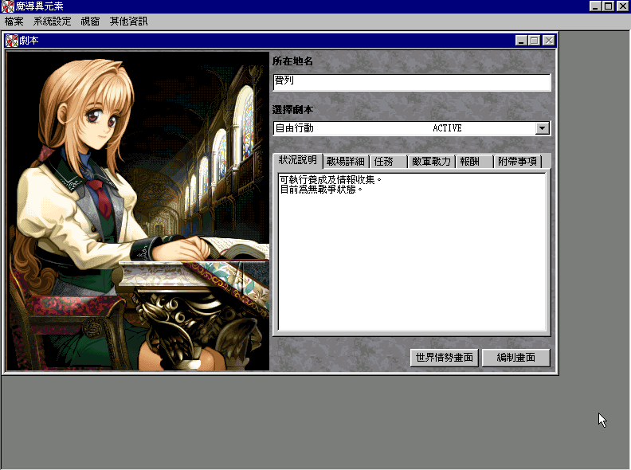
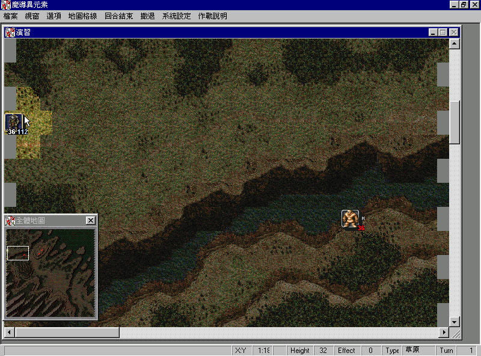

名稱：魔導異元素1：精靈戰士篇 (Sequence Palladium，中文版)
簡介：工畫堂1997年出品的策略角色扮演遊戲，2000年由協和繁中化並代理發行，大陸則由
依星簡中化並代理發行 [待補]。


保護：光碟，將光碟SequencePalladium目錄裡的bgm和wave目錄拷貝到安裝目錄，再修改下
列registry，即可免光碟：
[HKEY_LOCAL_MACHINE\Software\Kogado\SequencePalladium]
"BGM_PATH"=".\\BGM\\"
"DATA_PATH"=".\\DATA\\"
"SE_PATH"=".\\WAVE\\"
限制：遊戲只能在Win9x系統上執行，XP以上系統在戰鬥時會沒有選單，無法進入下一回合。
備註：簡中版因註冊表中提供wave檔的SE_PATH資訊，最後少了一個反斜線\，導致遊戲沒有
聲音，必須自行修正，例如：
[HKEY_LOCAL_MACHINE\Software\Kogado\SequencePalladium]
"SE_PATH"="C:\\Program Files\\yistar\\魔导异元素\\WAVE\\"
說明：
1.養成、契約、編制等需要選擇成員者，均以滑鼠拖拉方式進行。
2.部隊編制前，要先進行騎士與精靈的臨時契約，然後在部隊編制時再用滑鼠右鍵進行機體
選擇，才能做為待機部隊。
3.解除契約可能會造成精靈離去，因此契約完成後儘量不要解除。
4.精靈的數目有限，因此要預留一些精靈給後續加入的優秀騎士。